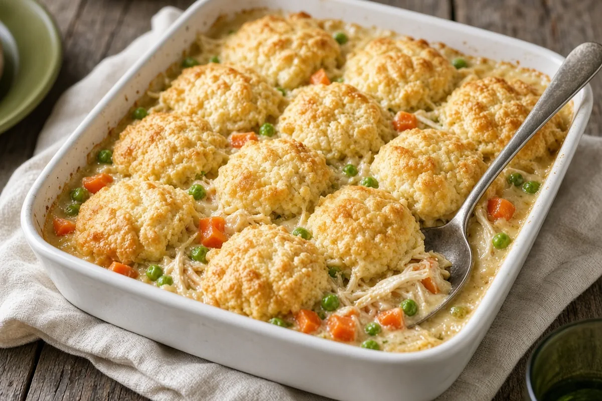

Chicken Dumpling Casserole
A layered Southern casserole: buttery shredded chicken, a Bisquick batter, and a creamy chicken stock pour that bakes into golden dumplings on top.

Adapted from justapinch.com
8 servings
By
Yield: 8 servings
Prep:
Cook:
Total:
Difficulty: Easy
Ingredients
- 3 boneless chicken thighs
- 2 cups chicken stock (from cooking the chicken, or boxed)
- 1 stick butter
- 2 cups whole milk
- 1 (10.5-oz) can cream of chicken soup (herbed adds more flavor)
- 3 tsp chicken bouillon granules
- 1/2 tsp dried sage
- 1 tsp black pepper, plus salt as desired
- 2 cups Bisquick
- 1 (12-oz) bag frozen mixed vegetables, optional
Instructions
- Put the chicken in a saucepan with water to cover and bring to a boil. Turn off the heat, cover, and let it sit 15 minutes to finish cooking.
- Lift out the chicken, strain and save the cooking liquid for the stock, and shred the chicken once it's cool enough to handle. Heat the oven to 350°F.
- Melt the butter in a 9 x 13-inch or larger casserole dish in the oven. Spread the chicken over the butter and sprinkle with the black pepper and sage. For a pot-pie version, scatter the mixed vegetables over the chicken now. Do not stir the layers.
- Whisk the milk and Bisquick together and slowly pour it over the chicken.
- Whisk the chicken stock with the bouillon granules and soup until smooth, then slowly pour it over the Bisquick layer.
- Bake 50 minutes, until the top is golden brown.
Notes: Ovens and pan sizes vary; check at 50 minutes and give it up to 10 more if the top isn't golden. Swish a little warm stock in the soup can to get it all out. The original called for breasts in the cooking step and thighs in the list; thighs stay moister.